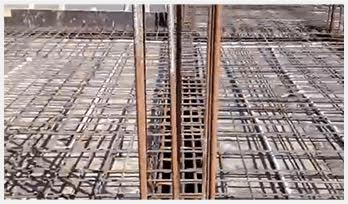

1 IMPORTANT POINTS
Q What are coarse aggregates?
A Coarse aggregates are crushed stones which are used in the construction to make concrete. The size of coarse aggregates vary from 4.75 mm to 40 mm.

Q How are coarse aggregates made?
A Construction aggregate, or simply "aggregate", is a broad category of coarse particulate material used in construction, includingsand, gravel, crushedstone, slag, recycled concrete and geosynthetic aggregates. Aggregates are the most mined materials in the world.
Q How are coarse aggregates sold?
A Coarse aggregates can be sold in cubic feet or ton depending on the supplier. One ton of coarse aggregates approximately equals to 23.5 cubic feet of coarse aggregates.
Q How are coarse aggregates delivered?
A Generally, coarse aggregates are delivered in two truck loadsizes 20 ton truck load in 6 wheeler truck. 30 ton truck load in 10 wheeler truck.
2 TYPES
Q What are the types of coarse aggregates available in the market?
A
| Ordinary Portland Cement (OPC) | Portland Pozzolana Cement (PPC) | Portland Stag Cement (PSC) | White Cement | |
| Uses | Construction work in mid or normal level of environmental conditions | Construction work with high volumes of cement. Mass construction projects. | Construction near sea-water or sea-soil;Water treatment plants;Sewage disposal treatment plants. | Fixing white and vitrified tiles Making false ceilings;Creating shades of different colors |
|---|
Q What are the different types of Coarse aggregates available in the market?
A
| Size wise Classification | |||
|---|---|---|---|
| 6mm | 12mm | 20mm | 40mm |
| Composition wise Classification | ||||||
|---|---|---|---|---|---|---|
| Single size aggregates | 85 to 100% of the material of the same size | |||||
| Graded aggregates | A range of sizes in its composition | |||||
3 BRANDS
There are companies like Bharathi,Robo,Thriveni which manufacture branded coarse aggregates. Also, there are many local manufacturers which produce coarse aggregates.
4 STORAGE AND HANDLING
Q How to store coarse aggregates on site?
A Coarse aggregates should be placed on a dry patch of ground. Its pile should not be mixed with mud, clay or soil. Different sized coarse aggregates should be stored in different stacks.
5 COSTING AND ESTIMATION
Q What is the cost of the coarse aggregates in the market?
A Coarse aggregates cost around Rs.800 per ton.
Q What is the estimated amount of coarse aggregates to construct a house?
A Enter your built up area and no. of stories in the following form and we will calculate the tentative amount of TMT required.
Enter per ton price of TMT
Enter per ton price of TMT
Tentative amount of coarse aggregates required 0.00 ton